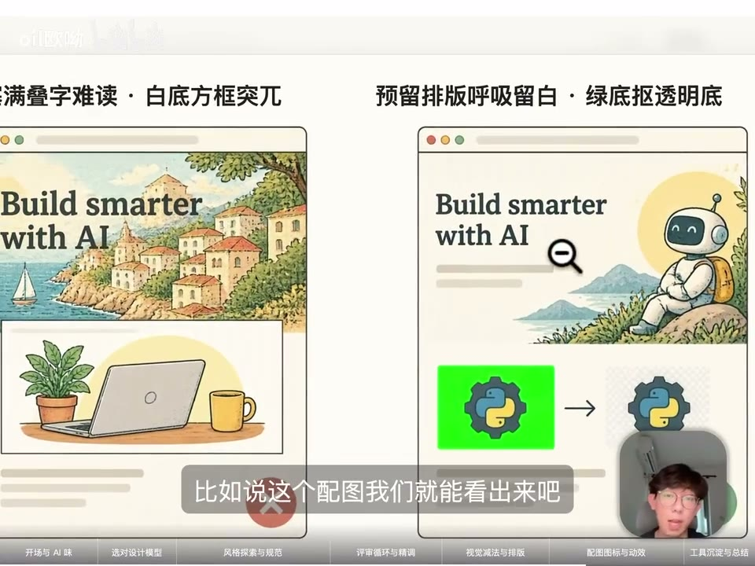

原视频 · 在线回看
点击后联网加载 B 站播放器；本地不下载整段视频。

原视频 · 在线回看
点击后联网加载 B 站播放器；本地不下载整段视频。
来源：oil欧呦｜31:04｜Bilibili 原视频｜深度阅读
用 AI 做网页时，第一版常常显得熟悉又平淡：页面中央放一个大标题，背景铺蓝紫渐变，周围散着星星、表情符号和圆角卡片；每个角落还添上解释性小字。单看某个元素都说得过去，放在一起却像一套默认模板。一个原因是模型倾向于组合常见设计元素，选出它认为稳妥的平均答案。要让页面长出自己的气质，就得先决定它要服务谁、传达什么，再挑选能支持这些目标的文字和视觉元素。
挑模型时也可以先看它自然生成的审美，再考虑复杂提示词能否纠正输出。每个模型的能力与偏好都会变化，录制时的排行只能代表当时的观察。与其只抄一份模型榜单，不如用一个简单页面任务试一轮，观察默认排版、色彩和图片处理是否合自己的口味。也可以把文字能力和视觉能力分开看：能写出通顺文案，不等于能安排好画面；某次榜单靠前，也不保证它恰好适合你的设计方向。
如果第一版的结构和气质都不对，不妨先把方向重新打开。不断在错误版式上加提示，模型会沿着已有上下文继续修补，改动空间容易受限。可以先让 AI 采访你：产品给谁用，页面里最重要的任务是什么，用户需要先看到什么，你希望呈现怎样的气氛。问题回答得越具体，后面越容易把“做得高级一点”变成可以检查的选择。
接下来先发散再收敛。让模型一次提出几种差异清楚的方向，最好用网页或卡片并排呈现。不要只说“要独特”，而要让方案在明确的维度上不同：一种用衬线字体、一种用无衬线字体；一种明亮、一种深色；一种对称、一种偏置。比较之后挑出一两个接近目标的方案，再指出喜欢其中哪些部分。这样的比较会帮助我们说清偏好，也减少从空白页面猜设计的负担。
例如，做工业控制面板时，可以希望按钮看起来有触感、操作时有轻微声音反馈，同时避免界面变成卡通玩具。如果第一版只有单调的灰色渐变，就继续要求增加合适的纹理和色彩层次。每条要求都关联到具体对象和用户感受，模型更容易知道要改什么。随机、独特、未来感之类的词可以描述方向，却不足以替代布局、字体、色彩和交互的具体选择。
方向选定后，把它整理成一份设计说明，例如 DESIGN.md。除颜色、字体和圆角等可复用参数，也写下页面想呈现的情绪、品牌印象与使用场景。数字规范能帮助多个页面保持一致，但只给一组色值和组件尺寸还不够：新页面仍可能把同一组数字用出不同的气质。把“为什么选这些样式”也讲清楚，后续扩展才更容易守住统一方向。
进入迭代后，尽量把直觉翻译成可执行的观察。比如，发现下载按钮不够醒目，就指出它在页面中的位置、与周围按钮相比哪里弱；发现顶部按钮视觉太重、抢走主标题的注意力，就让 AI 调整尺寸、颜色或间距。我们未必能说出准确的设计术语，也能从视觉效果出发描述问题，再让模型提出具体改法。改完看效果是否符合目标，再决定保留、回退或继续调整。
当自己盯着一个页面太久，容易只看到实现细节。可以把当前页面截图交给另一个独立的设计评审，让它只从视觉角度检查，并要求给出具体修改建议。检查项目可以包括导航文字是否重叠、是否出现空白屏、排版是否清楚、动效是否拖沓、是否堆了无用的小字；“看起来不够高级”这样的评价还需要落到页面上的位置和可执行动作。若最初有参考图，可以把参考图和当前页面一起交给评审，让它比较哪些地方偏离原方向。
迭代要留出判断空间。先做一两轮，再比较页面是否真的变好；如果连续多轮评分仍达不到目标，例如十轮都没有达到自己设定的九分，可以停下来换模型或重定方向。评分只是辅助判断，视觉变化和实际使用效果仍要一起看。评审任务通常比重新设计和写代码轻，因而可以把更强的模型留给截图评审，把生成与实现分开安排。
若想让 AI 改某个具体区域，却说不清位置，可以在截图上框出元素，也可以用书签式选择工具点选页面中的标签。工具把选中元素对应的代码位置整理成提示词，复制后交给模型，修改范围会更明确。举例来说，标签文字没有垂直居中时，点选标签并附上“让文字在标签内垂直居中”，比反复描述它在页面哪个角落更直接。
页面框架搭好后，常见的下一步是做减法。模型容易把页面塞满：顶部有很多说明，中间放很大的首屏区域，下面再铺上商品或功能卡片。内容越多，用户越难判断先看什么。可以让每个屏幕保留一个主要视觉重心：如果这一页要让人先看到促销卡片，就让它醒目，其余信息沿着次要层级安排。
后台页面尤其容易堆出一面数据墙。先列出操作人员最关心的指标，让它们在首屏清晰可见；次要数据可以进入详情页、弹窗或侧边抽屉，按需要再展开。分隔线不必都很厚，较轻的边框、清爽的配色和整齐的排版能保留区块关系，也让内容有呼吸感。图表的颜色也要协助阅读，避免许多深色块同时争夺注意力。
文字说明也应按用户是否需要来决定。选项列表已经明显承担目录作用时，顶部再加“目录”二字通常没有新信息；但一个信封形状的按钮未必能让人知道它代表投稿，就需要清楚标注动作。删减的判断标准，是这段文字能不能帮助用户理解页面或完成操作。文字本身的大小、字距和行高也会影响阅读：页面文字多时，增加行间距、提高可读性，并用合适的配图隔开较长段落，能减轻连续阅读的压力。
组件库和图标库可以提供稳定的基础，例如 Tailwind 一类样式工具，以及 shadcn/ui、HeroUI 等组件库，都能帮助搭出常见的按钮与布局，减少让模型从零拼每个控件的工作。不过，整齐的容器和文字还不一定构成完整的视觉设计。配图往往更直接地改变页面观感：一张合适的书籍封面能为简单的页面增加主题，白底黑字的页面也可以靠高质量图片建立气质。
为网页生成配图时，要一并考虑文字将放在哪里。若标题叠在图上，就请模型在文字区域留出干净、颜色较浅的空间；把复杂纹理铺在文字后方，文字会难以辨认。透明底素材方便叠放：白底图标贴到另一张图上会盖住下面的内容，透明图标则可以自然压在背景上。若生成模型不能直接输出透明背景，可以在绿底图上保留主体，再用程序抠掉绿色。复杂效果例如玻璃折射、流光或波纹可以按需要添加，先确保页面信息清楚，再决定是否值得加入。
定制图标能让一组页面更有自己的识别特征。可以先生成一张 4×4 的图标表，再从中选出合适的图标。按创作者自己的项目经验，常见网站需要的自定义图标数量有限，一张表就能提供足够多的候选。品牌形象也能延伸到不同产品：同一个小人物作为图标主体，再按代码工具、阅读产品等类别更换装饰和背景，用户在不同页面里会逐渐认出这套视觉语言。个人网站中的人物和小狗还会随着鼠标移动视线，克制的小动效和细节彩蛋能补充个性，前提是它们没有妨碍阅读和操作。
如果模型直接设计界面的能力有限，可以先生成一张界面草图，再让它参考图片实现页面。草图阶段的任务是确认布局和视觉方向；实现阶段则把已确定的方向转成可运行的页面。创意和代码转换需要的能力不同，拆开之后，也更容易看出问题来自设计方向还是实现细节。
同样可以按任务难度分配模型：需要提出风格、做出设计判断时，用能力更强的模型；规范、参考图和页面原型确定以后，再让成本较低的模型完成常规实现。若让较弱的模型从开放要求开始做复杂设计，它可能无法充分理解设计说明，结果需要反复返工；方向已经明确时，工作更接近按规范搭建页面，对创意的要求会低得多。录制时提及的具体模型和工具会变化，值得保留的是这种任务分工：先把设计方向做清楚，再用合适的工具完成实现。
一套可重复的流程由几步连在一起：先通过访谈明确用户、目标和气质；提出差异明确的方案并选定方向；把样式与设计意图写成规范；实现页面后根据具体观察迭代；再用独立视角检查截图，继续调整层级、配图和细节。每做一个新产品，都能从已有规范、图标和视觉习惯中积累素材。高级感很少来自一次生成，更多来自方向清楚、取舍明确，并愿意逐轮打磨。